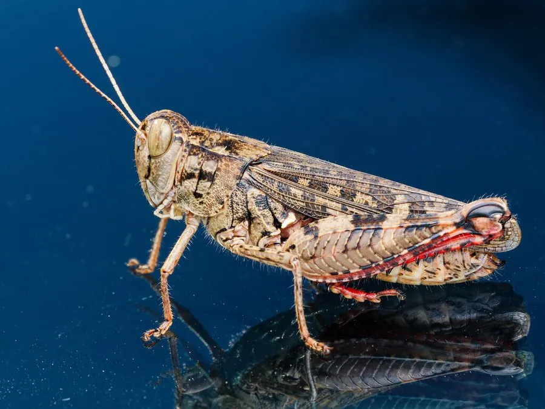

昆虫 · 动物界
短星翅蝗 Calliptamus abbreviatus

前翅短小不及腹端的中型蝗虫，体灰褐带斑，后足腿节有黑斑，栖息于草原与荒地，是中国北方的常见蝗虫。
- 分类
- 门节肢动物门纲昆虫纲目直翅目科蝗科属星翅蝗属
- 栖息环境
- 草原、草甸、荒地、田埂和路旁草丛
- 地理分布
- 中国北方、朝鲜半岛、蒙古和俄罗斯远东
- 保护级别
- 尚无保护级别；通常不需专门防治，密度骤增时再行处理
物种志
短星翅蝗的体长约二至三厘米，体形中等而略显粗短，体色灰褐至黄褐，体表有细密的刻点和深浅不一的斑纹，前胸背板呈屋脊状，背面有淡色的十字形纹。它最明显的特征是前翅短小，长度不到腹部的末端，因此不能远飞，只能靠跳跃移动，短星翅蝗之名由此而来。后足腿节粗壮，外侧有黑色的斑块，胫节红色，末端有刺。
它分布于中国北方、朝鲜半岛、蒙古和俄罗斯远东，栖息在草原、草甸、荒地、田埂和路旁的草丛，是北方草原和农田边缘的常见蝗虫。成虫和若虫都取食禾本科和其他草本植物的叶片，种群密度高时会取食农作物，造成减产。它一年发生一代，以卵在土中越冬，卵块外包泡沫状的卵鞘，若虫在春季孵化，经数次蜕皮后羽化。它尚无保护级别，通常不需专门防治，只有在密度骤增时才采取药剂或生物措施。
形态与习性
- 体长约二至三厘米，体形中等粗短
- 前翅短小，不及腹端，不能远飞
- 体色灰褐至黄褐，前胸背板有淡色十字纹
- 后足腿节外侧有黑斑，胫节红色带刺
- 食性取食禾本科和其他草本植物叶片
- 发生世代一年一代，以卵在土中越冬
趣味知识
- 它的翅膀短得盖不住肚子，所以只能跳，不能像飞蝗那样远飞。
- 后腿上那块黑斑和红色的胫节，是辨认它的快捷标记。
- 在北方草原上它数量稳定，通常闹不成大灾。